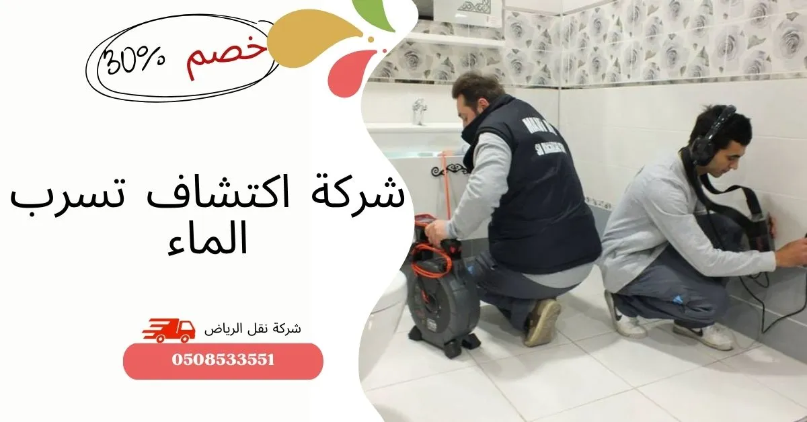

شركة اكتشاف تسرب الماء

تعتبر شركة اكتشاف تسرب الماء هي واحدة من أفضل الشركات الرائدة، والتي تقوم بتقديم حلول فعالة لمشاكل تسربات المياه، فهي تعتمد على أحدث التقنيات للكشف عن التسربات في الأنابيب والمواسير والمرافق الصحية داخل المنازل والمباني التجارية، كما أن تسرب الماء يمكن أن يؤدي إلى أضرار كبيرة إذا لم يتم اكتشافه ومعالجته في الوقت المناسب لذلك، تعتبر هذه الشركة الخيار المثالي للعملاء الذين يبحثون عن خدمات كشف تسرب المياه بشكل دقيق وآمن.
شركة اكتشاف تسرب الماء
تعتبر شركة اكتشاف تسرب الماء من الشركات المتخصصة في الكشف عن التسربات، باستخدام أحدث التقنيات مثل أجهزة الكشف بالموجات فوق الصوتية، التصوير الحراري، والأنظمة الذكية التي تحدد مكان التسرب بدقة عالية، حيث تساعد هذه الطرق على الكشف عن التسربات تحت الأرض وفي الجدران، مما يمنع تفاقم الأضرار الناتجة عن التسرب، بالإضافة إلى أن تتمتع الشركة بفريق من المهندسين والفنيين المدربين على أعلى مستوى من الاحترافية لضمان تقديم الخدمة بأعلى جودة ممكنة، وهذا من خلال إجراء الفحوصات الدورية والمبكرة، يمكن للعملاء تجنب المشاكل الكبيرة الناتجة عن تسرب المياه، مما يساهم في الحفاظ على المباني والتقليل من تكاليف الإصلاح.
كم سعر كشف تسربات المياه
تقدم شركة نقل الرياض خدمة كشف تسربات المياه بأعلى مستوى من الاحترافية باستخدام تقنيات حديثة ودقيقة، فـ على الرغم من أن السعر قد يختلف حسب حجم العمل ونوع التسربات، إلا أن الشركة تحرص دائمًا على تقديم أسعار تنافسية في السوق، فـ من أبرز ما يميز شركة نقل الرياض هو العروض والخصومات التي تقدمها بشكل دوري لعملائها والتي يمكن أن تصل إلى 30%، مما يساعد على تقليل التكاليف على المدى الطويل بالإضافة إلى ذلك، توفر الشركة خدمات كشف التسربات بجودة عالية دون التأثير على تكلفة الخدمة، كما أن العملاء يمكنهم الاستفادة من خدماتنا وعروض خاصة في المواسم، مما يجعلها خيارًا مفضلًا للكثيرين، بالاعتماد على فريق من الخبراء يمكن للعملاء التأكد من أن التسربات سيتم اكتشافها ومعالجتها بأقل تكلفة ممكنة وبأفضل الطرق التقنية المتاحة.
شركات كشف تسربات المياه بالمملكة
يبحث الكثير من الأشخاص عن أفضل شركات كشف تسربات المياه في المملكة، حيث تقدم خدمات متخصصة لضمان الحفاظ على البنية التحتية للمنازل والمباني من التلف الناجم عن التسربات المائية، كما تستخدم هذه الشركات أحدث التقنيات للكشف، عن التسربات التي قد تكون غير مرئية أو صعبة الاكتشاف باستخدام الطرق التقليدية، كما أن من أبرز الشركات في المملكة التي تقدم هذه الخدمات هي شركة نقل الرياض، التي تميزت بتقديم حلول فعالة وموثوقة للكشف عن تسربات المياه ومعالجتها.
تتمثل طرق الكشف المستخدمة في التقنيات الحديثة مثل الكاميرات الحرارية، أجهزة الكشف عن التسربات تحت البلاط، وأجهزة استشعار الرطوبة المتقدمة، كما توفر الشركات أيضًا خدمات إصلاح التسربات بشكل سريع وفعال دون التسبب في أضرار للممتلكات، وتعد هذه الشركات من الخيار الأول للكثير من الأفراد الذين يبحثون عن حلول سريعة ودقيقة للمشكلات المتعلقة بتسربات المياه.
أهمية كشف تسربات المياه
تعد أهمية شركة اكتشاف تسربات الماء، في الحفاظ على سلامة المباني والمرافق وحمايتها من الأضرار المحتملة التي قد تحدث بسبب تسرب المياه، كما يعد التسرب غير المكتشف من أبرز الأسباب التي تؤدي إلى تدهور البنية التحتية للمباني وزيادة التكاليف فيما يتعلق بالصيانة والإصلاحات المستقبلية، إذا لم يتم الكشف عن التسربات مبكرًا، يمكن أن تتفاقم المشكلة وتسبب أضرارًا كبيرة مثل تشقق الجدران، تأكل الأسطح، وتلف الأرضيات لذلك، يعتبر الكشف المبكر عن التسربات أمرًا بالغ الأهمية. إليك بعض الأهمية الرئيسية التي يجب مراعاتها:
حماية الممتلكات
يساهم الكشف المبكر في منع تآكل الجدران، الأرضيات، والأثاث الناتج عن الرطوبة الزائدة، مما يحافظ على جمال المبنى.
منع زيادة التكاليف
يمنع تزايد حجم التسربات التي قد تؤدي إلى تكاليف أكبر على المدى الطويل، مثل تغيير أنابيب المياه أو إصلاح الأسطح المتضررة.
الحفاظ على صحة الأسرة
يمكن لتسربات المياه أن تؤدي إلى تراكم العفن والفطريات التي قد تسبب مشاكل صحية مثل الحساسية، الربو، والتسمم الفطري.
تحسين كفاءة استهلاك المياه
كشف التسربات يساعد في تقليل الفاقد من المياه، مما يساهم في تقليل الفواتير الشهرية.
زيادة عمر المبنى
من خلال الحفاظ على الجدران والأسطح جافة، يساعد الكشف المبكر في الحفاظ على سلامة المبنى وزيادة عمره الافتراضي.
تواصل معنا الآن واحصل على أفضل الخدمات
جهاز كشف تسرب المياه تحت البلاط
يعد جهاز كشف تسرب المياه تحت البلاط من التقنيات الحديثة التي ساهمت بشكل كبير في اكتشاف التسربات المخفية في الأماكن التي يصعب الوصول إليها، مثل تحت البلاط أو الجدران، يعمل الجهاز باستخدام تقنيات متقدمة مثل الأمواج الصوتية أو الأشعة تحت الحمراء لتحديد مكان التسرب بدقة دون الحاجة إلى تكسير البلاط أو إحداث أي ضرر في المكان، يتميز هذا الجهاز بقدرته على كشف التسربات الصغيرة جدًا التي قد لا تكون مرئية للعين المجردة.
مميزات كشف التسربات باستخدام الجهاز
الدقة العالية
يمكن للجهاز أن يحدد مكان التسرب بدقة مما يساهم في تقليل الأخطاء وإجراء الإصلاحات بشكل أسرع.
عدم إحداث ضرر
يعمل الجهاز دون الحاجة إلى تكسير البلاط أو الجدران، مما يقلل من تكاليف الإصلاح ويحافظ على الجمالية.
سرعة الكشف
يتيح الكشف السريع للتسربات في وقت قصير، مما يساعد في تقليل الأضرار الناتجة عن تسرب المياه.
الكفاءة
يمكن اكتشاف التسربات في أماكن يصعب الوصول إليها مثل الأنابيب تحت الأرض أو داخل الجدران.
الحفاظ على الموارد
يساعد في توفير المياه من خلال تحديد أماكن التسربات غير المرئية، مما يساهم في تقليل الفاقد.
الأسئلة الشائعة حول شركة اكتشاف تسرب الماء
كيف يمكنني اكتشاف تسرب المياه في منزلي؟
يمكن اكتشاف التسربات باستخدام تقنيات حديثة مثل التصوير الحراري والكشف بالموجات فوق الصوتية، من المهم فحص أي مناطق رطبة أو بقع ماء تظهر فجأة.
هل شركة اكتشاف تسرب الماء تقدم خدمة الطوارئ؟
نعم، تقدم شركة اكتشاف تسرب الماء خدمات الطوارئ على مدار الساعة للكشف عن التسربات في أي وقت من اليوم.
هل يمكن الوقاية من التسربات المستقبلية؟
نعم، من خلال إجراء فحوصات دورية وصيانة منتظمة للأنابيب والمواسير، يمكن تقليل فرصة حدوث تسربات مستقبلية.
كيف يمكنني التواصل مع شركة اكتشاف تسرب الماء؟
يمكنك التواصل مع شركة اكتشاف تسربات المياه عن طريق الاتصال الهاتفي المباشر، أو من خلال زيارة الموقع الإلكتروني الخاص بها لتقديم طلب الخدمة، كما توفر أيضًا إمكانية التواصل عبر تطبيقات المراسلة مثل الواتس آب، حيث يمكن للعملاء إرسال تفاصيل المشكلة لتلقي استجابة سريعة من الفريق المختص.
في النهاية تقدم شركة اكتشاف تسرب الماء خدمات متميزة لاكتشاف ومعالجة جميع أنواع التسربات بكفاءة عالية، حيث إنها خيار مثالي للعملاء الذين يبحثون عن حلول مبتكرة وعملية، من خلال الاعتماد على التكنولوجيا الحديثة والخبرات المتنوعة، تضمن الشركة الحفاظ على سلامة ممتلكات العملاء وتوفير التكاليف الناجمة عن الإصلاحات الكبيرة، لا تتردد في التواصل مع شركة نقل الرياض لاكتشاف تسرب الماء لضمان حماية منزلك أو مكان عملك من الأضرار التي قد تنجم عن التسربات.